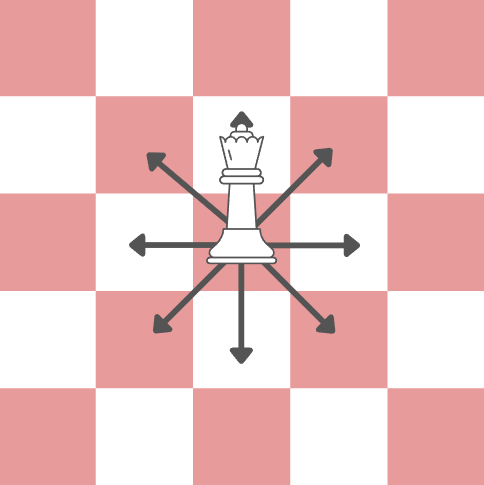
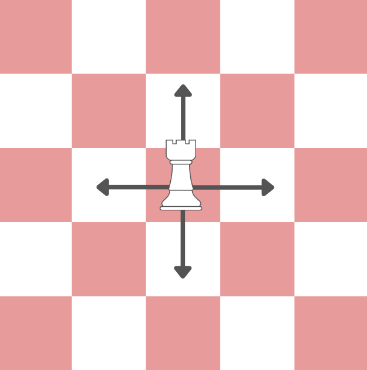
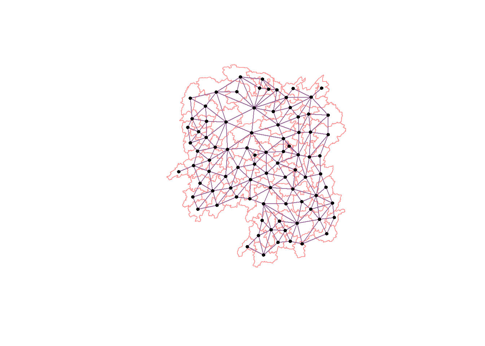
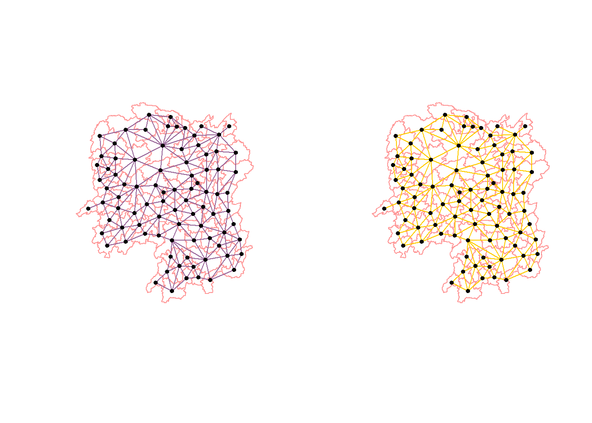
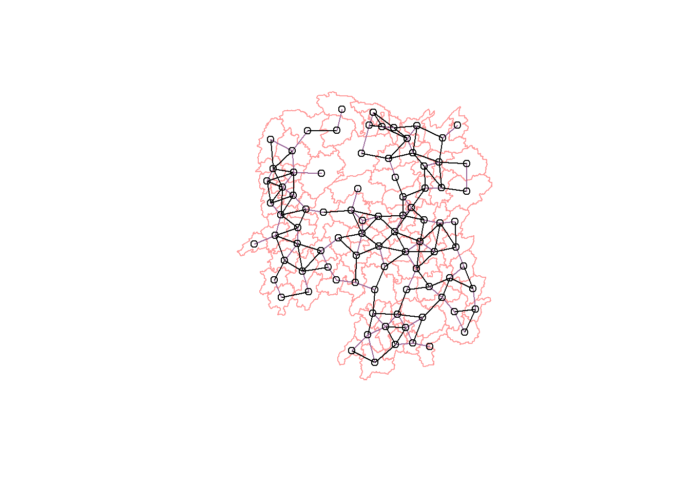
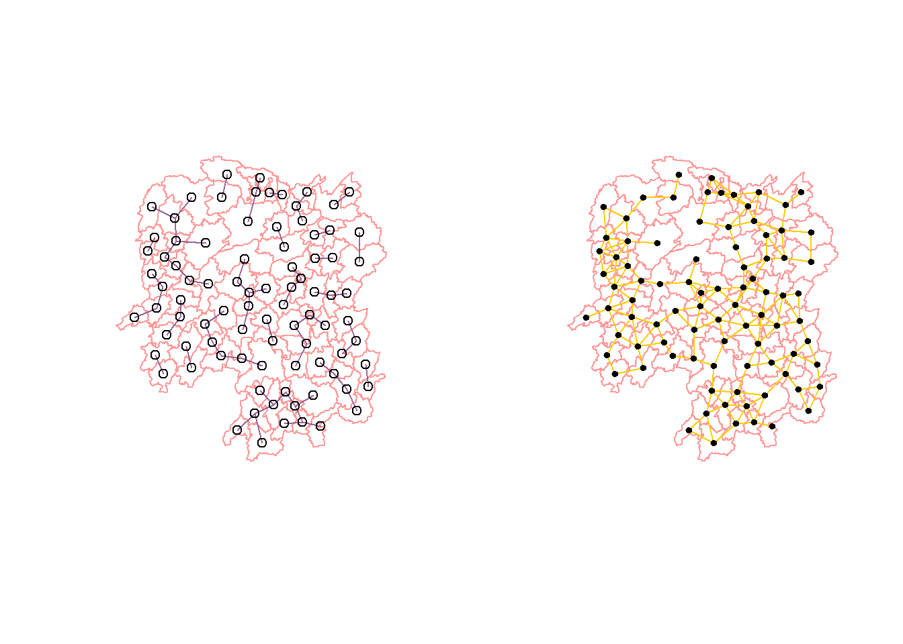

pacman::p_load(sf, tidyverse, spdep, tmap)In-class Exercise 1: Spatial Weights and Applications
Overview
The main objective of this exercise is to learn how to compute spatial weights using R.
Getting Started
First we need to load the required libraries for the exercise. The code chunk below will install and load tidyverse , sf , spdep , and tmap packages.
There’s a new library name I’m encountering for the first time, namely, spdep .
LEVEL UP!
NEW LIBRARY LEARNED: spdep
This library provides functions that allows the user to create spacial weights matrices given shape or point data.
Importing the geospatial data
As explored in Hands-on Exercise 1, we use the st_read() to import the Hunan shapefile into R as shown in the code chunk below. The imported shapefile will be a simple features Object of sf with polygon data.
hunan <- st_read(dsn = "data/geospatial", layer = "Hunan")Reading layer `Hunan' from data source
`C:\acapgalano\ISSS624\In-class_Ex\In-class_Ex1\data\geospatial'
using driver `ESRI Shapefile'
Simple feature collection with 88 features and 7 fields
Geometry type: POLYGON
Dimension: XY
Bounding box: xmin: 108.7831 ymin: 24.6342 xmax: 114.2544 ymax: 30.12812
Geodetic CRS: WGS 84The coordinate reference system is WGS 84, the latest version of the World Geodetic System which uses the EPSG 4326.
Importing attribute data in CSV
Now we need to import the attribute data Hunan_2012.csv using read_csv of the readr package. This produces a data frame Object.
hunan2012 <- read_csv('data/aspatial/Hunan_2012.csv')Rows: 88 Columns: 29
── Column specification ────────────────────────────────────────────────────────
Delimiter: ","
chr (2): County, City
dbl (27): avg_wage, deposite, FAI, Gov_Rev, Gov_Exp, GDP, GDPPC, GIO, Loan, ...
ℹ Use `spec()` to retrieve the full column specification for this data.
ℹ Specify the column types or set `show_col_types = FALSE` to quiet this message.Joining the polygon and attribute data using relational join
The function left_join of the dplyr package performs a left outer join and so the code chunk below updates attribute table of hunan’s SpatialPolygonsDataFrame with the attribute fields of the hunan2012 data frame.
hunan <- left_join(hunan, hunan2012)Joining, by = "County"Visualizing Regional Development Indicator
The code chunk below produces the basemap and chloropleth map showing the distribution of GDPPC 2012 by using qtm() of the tmap package, which we learned draws a thematic map quickly.
basemap <- tm_shape(hunan) + tm_polygons() + tm_text("NAME_3" , size = 0.5)
gdppc <- qtm(hunan, "GDPPC")
tmap_arrange(basemap, gdppc, asp = 1, ncol = 2)
There are some arguments in the functions above that appear seemingly out of nowhere. These are actually variable names or the columns from the attribute data. The variables below are described as follows:
“NAME_3” - the names of counties in Hunan
“GDPPC” - the GDP per capita
Computing Contiguity Spatial Weights
LESSON REVIEW!
dfdfdfddfdfdfdfdfdfdfd
Computing QUEEN contiguity based neighbors

The code chunk below is used to compute Queen contiguity weight matrix.
wm_q <- poly2nb(hunan, queen=TRUE)
summary(wm_q)Neighbour list object:
Number of regions: 88
Number of nonzero links: 448
Percentage nonzero weights: 5.785124
Average number of links: 5.090909
Link number distribution:
1 2 3 4 5 6 7 8 9 11
2 2 12 16 24 14 11 4 2 1
2 least connected regions:
30 65 with 1 link
1 most connected region:
85 with 11 linksThe summary report above shows that there 88 area units in Hunan. It also shows the link number distribution. For better visualization, the information is replicated in the table below.
| Number of Links | Frequency |
|---|---|
| 1 | 2 |
| 2 | 2 |
| 3 | 12 |
| 4 | 16 |
| 5 | 24 |
| 6 | 14 |
| 7 | 11 |
| 8 | 4 |
| 9 | 2 |
| 11 | 1 |
As observed, the most connected area unit has 11 neighbors. There are two units with only one neighbor.
The polygon object wm_q contains the neighbors of each polygon it contains. From the previous code chunk, we saw that there are 88 area units represented by polygons. To access the list of neighbors of that polygon, you need to use the index or polygon ID as stored in the hunan SpatialPolygonsDataFrame. A sample is shown below.
wm_q[[1]][1] 2 3 4 57 85Based on the output above, we know that Polygon 1 has 5 neighbors with polygon IDs 2, 3, 4, 57 and 58.
If we try the same code on Polygon 88, we get 2 neighbors, namely Polygon 59 and 87.
wm_q[[88]][1] 59 87
FUNDAMENTALSS CHECK!
The code wm_q[[89]] does not work! Why is that?
We only have 88 regions/polygons as shown from the previous summary function. Polygon 89 does not exist!
Knowing the polygon ID is also handy for accessing data from the original hunan dataframe. For example, the code chunk below retrieves the county of the Polygon 1 which is Anxiang.
hunan$County[1][1] "Anxiang"
RANDOM OBSERVATION!
For some people, the code above my feel a bit weird, because in other programming languages, the index of the “row” comes first or rather, you get the datapoint and figure out which attribute you want. However in R, it seems to do the opposite. The $ operator takes the column data as a list and then the ID or index dictates the which value to take, independent of the “row” or datapoint.
With that in mind the code chunk to reveal the county names of the five neighboring polygons is:
hunan$NAME_3[c(2,3,4,57,85)][1] "Hanshou" "Jinshi" "Li" "Nan" "Taoyuan"Similarly, we can use the list polygon IDs produced by wm_q[[1]] to retrieve data from hunan. The code chunk below shows this in action and produces a data frame of Anxiang’s neighbors consisting of county and GDPPC.
nb1 <- wm_q[[1]]
nb1_df <- data.frame(hunan$NAME_3[nb1], hunan$GDPPC[nb1])
colnames(nb1_df) <- c("County", "GDPPC")
nb1_df County GDPPC
1 Hanshou 20981
2 Jinshi 34592
3 Li 24473
4 Nan 21311
5 Taoyuan 22879The output above shows that the GDPPC of the five nearest neighbors of Anxiang based on Queen’s method are 20981, 34592, 24473, 21311 and 22879 respectively. The function str() displays the complete weight matrix.
str(wm_q)List of 88
$ : int [1:5] 2 3 4 57 85
$ : int [1:5] 1 57 58 78 85
$ : int [1:4] 1 4 5 85
$ : int [1:4] 1 3 5 6
$ : int [1:4] 3 4 6 85
$ : int [1:5] 4 5 69 75 85
$ : int [1:4] 67 71 74 84
$ : int [1:7] 9 46 47 56 78 80 86
$ : int [1:6] 8 66 68 78 84 86
$ : int [1:8] 16 17 19 20 22 70 72 73
$ : int [1:3] 14 17 72
$ : int [1:5] 13 60 61 63 83
$ : int [1:4] 12 15 60 83
$ : int [1:3] 11 15 17
$ : int [1:4] 13 14 17 83
$ : int [1:5] 10 17 22 72 83
$ : int [1:7] 10 11 14 15 16 72 83
$ : int [1:5] 20 22 23 77 83
$ : int [1:6] 10 20 21 73 74 86
$ : int [1:7] 10 18 19 21 22 23 82
$ : int [1:5] 19 20 35 82 86
$ : int [1:5] 10 16 18 20 83
$ : int [1:7] 18 20 38 41 77 79 82
$ : int [1:5] 25 28 31 32 54
$ : int [1:5] 24 28 31 33 81
$ : int [1:4] 27 33 42 81
$ : int [1:3] 26 29 42
$ : int [1:5] 24 25 33 49 54
$ : int [1:3] 27 37 42
$ : int 33
$ : int [1:8] 24 25 32 36 39 40 56 81
$ : int [1:8] 24 31 50 54 55 56 75 85
$ : int [1:5] 25 26 28 30 81
$ : int [1:3] 36 45 80
$ : int [1:6] 21 41 47 80 82 86
$ : int [1:6] 31 34 40 45 56 80
$ : int [1:4] 29 42 43 44
$ : int [1:4] 23 44 77 79
$ : int [1:5] 31 40 42 43 81
$ : int [1:6] 31 36 39 43 45 79
$ : int [1:6] 23 35 45 79 80 82
$ : int [1:7] 26 27 29 37 39 43 81
$ : int [1:6] 37 39 40 42 44 79
$ : int [1:4] 37 38 43 79
$ : int [1:6] 34 36 40 41 79 80
$ : int [1:3] 8 47 86
$ : int [1:5] 8 35 46 80 86
$ : int [1:5] 50 51 52 53 55
$ : int [1:4] 28 51 52 54
$ : int [1:5] 32 48 52 54 55
$ : int [1:3] 48 49 52
$ : int [1:5] 48 49 50 51 54
$ : int [1:3] 48 55 75
$ : int [1:6] 24 28 32 49 50 52
$ : int [1:5] 32 48 50 53 75
$ : int [1:7] 8 31 32 36 78 80 85
$ : int [1:6] 1 2 58 64 76 85
$ : int [1:5] 2 57 68 76 78
$ : int [1:4] 60 61 87 88
$ : int [1:4] 12 13 59 61
$ : int [1:7] 12 59 60 62 63 77 87
$ : int [1:3] 61 77 87
$ : int [1:4] 12 61 77 83
$ : int [1:2] 57 76
$ : int 76
$ : int [1:5] 9 67 68 76 84
$ : int [1:4] 7 66 76 84
$ : int [1:5] 9 58 66 76 78
$ : int [1:3] 6 75 85
$ : int [1:3] 10 72 73
$ : int [1:3] 7 73 74
$ : int [1:5] 10 11 16 17 70
$ : int [1:5] 10 19 70 71 74
$ : int [1:6] 7 19 71 73 84 86
$ : int [1:6] 6 32 53 55 69 85
$ : int [1:7] 57 58 64 65 66 67 68
$ : int [1:7] 18 23 38 61 62 63 83
$ : int [1:7] 2 8 9 56 58 68 85
$ : int [1:7] 23 38 40 41 43 44 45
$ : int [1:8] 8 34 35 36 41 45 47 56
$ : int [1:6] 25 26 31 33 39 42
$ : int [1:5] 20 21 23 35 41
$ : int [1:9] 12 13 15 16 17 18 22 63 77
$ : int [1:6] 7 9 66 67 74 86
$ : int [1:11] 1 2 3 5 6 32 56 57 69 75 ...
$ : int [1:9] 8 9 19 21 35 46 47 74 84
$ : int [1:4] 59 61 62 88
$ : int [1:2] 59 87
- attr(*, "class")= chr "nb"
- attr(*, "region.id")= chr [1:88] "1" "2" "3" "4" ...
- attr(*, "call")= language poly2nb(pl = hunan, queen = TRUE)
- attr(*, "type")= chr "queen"
- attr(*, "sym")= logi TRUECreating ROOK contiguity based neighbors

By setting the queen argument to FALSE we get the Rook contiguity weight matrix.
wm_r <- poly2nb(hunan, queen=FALSE)
summary(wm_r)Neighbour list object:
Number of regions: 88
Number of nonzero links: 440
Percentage nonzero weights: 5.681818
Average number of links: 5
Link number distribution:
1 2 3 4 5 6 7 8 9 10
2 2 12 20 21 14 11 3 2 1
2 least connected regions:
30 65 with 1 link
1 most connected region:
85 with 10 linksThe summary report above shows that there are 88 area units in Hunan. The most connected area unit has 10 neighbors. There are two area units with only one neighbors.
Compared to the Queen contiguity weight matrix from earlier, there are clear differences in the number of links. Overall, given that the neighbors are taken in less directions, it makes sense that there is a lesser amount of links formed.
Visualizing contiguity weights
longitude <- map_dbl(hunan$geometry, ~st_centroid(.x)[[1]])
latitude <- map_dbl(hunan$geometry, ~st_centroid(.x)[[2]]) #uses 2nd value
coords <- cbind(longitude, latitude)
head(coords) longitude latitude
[1,] 112.1531 29.44362
[2,] 112.0372 28.86489
[3,] 111.8917 29.47107
[4,] 111.7031 29.74499
[5,] 111.6138 29.49258
[6,] 111.0341 29.79863Plotting Queen contiguity based neighbors map
plot(hunan$geometry, border="#FF9999")
plot(wm_q, coords, pch = 19, cex = 0.6, add = TRUE, col = "#996699")
Plotting Rook contiguity based neighbors map
plot(hunan$geometry, border="#FF9999")
plot(wm_r, coords, pch = 19, cex = 0.6, add = TRUE, col = "#996699")
Plotting both Queen and Rook contiguity based neighbor maps
par(mfrow=c(1,2))
plot(hunan$geometry, border="#FF9999")
plot(wm_q, coords, pch = 19, cex = 0.6, add = TRUE, col= "#996699", main="Queen Contiguity")
plot(hunan$geometry, border="#FF9999")
plot(wm_r, coords, pch = 19, cex = 0.6, add = TRUE, col = "#FFCC00", main="Rook Contiguity")
Computing Distance Based Neighbors
Determine the cut-off distance
k1 <- knn2nb(knearneigh(coords))
k1dists <- unlist(nbdists(k1, coords, longlat = TRUE))
summary(k1dists) Min. 1st Qu. Median Mean 3rd Qu. Max.
24.79 32.57 38.01 39.07 44.52 61.79 The summary report shows that the largest first nearest neighbor is 61.79 km, so using this as the upper threshold ensures that all area units will have at least on neighbor.
Computing fixed distance weight matrix
wm_d62 <- dnearneigh(coords, 0, 62, longlat = TRUE)
wm_d62Neighbour list object:
Number of regions: 88
Number of nonzero links: 324
Percentage nonzero weights: 4.183884
Average number of links: 3.681818
QUIZ!
What is the meaning of “Average number of links: 3.681818” shown above?
Mathmatically, it is the number of links over the number of regions. Therefore the value 3.681818 is from \(\dfrac{324}{88}\). It dictates how many neighbors a polygon or area unit would have on average.
str(wm_d62)List of 88
$ : int [1:5] 3 4 5 57 64
$ : int [1:4] 57 58 78 85
$ : int [1:4] 1 4 5 57
$ : int [1:3] 1 3 5
$ : int [1:4] 1 3 4 85
$ : int 69
$ : int [1:2] 67 84
$ : int [1:4] 9 46 47 78
$ : int [1:4] 8 46 68 84
$ : int [1:4] 16 22 70 72
$ : int [1:3] 14 17 72
$ : int [1:5] 13 60 61 63 83
$ : int [1:4] 12 15 60 83
$ : int [1:2] 11 17
$ : int 13
$ : int [1:4] 10 17 22 83
$ : int [1:3] 11 14 16
$ : int [1:3] 20 22 63
$ : int [1:5] 20 21 73 74 82
$ : int [1:5] 18 19 21 22 82
$ : int [1:6] 19 20 35 74 82 86
$ : int [1:4] 10 16 18 20
$ : int [1:3] 41 77 82
$ : int [1:4] 25 28 31 54
$ : int [1:4] 24 28 33 81
$ : int [1:4] 27 33 42 81
$ : int [1:2] 26 29
$ : int [1:6] 24 25 33 49 52 54
$ : int [1:2] 27 37
$ : int 33
$ : int [1:2] 24 36
$ : int 50
$ : int [1:5] 25 26 28 30 81
$ : int [1:3] 36 45 80
$ : int [1:6] 21 41 46 47 80 82
$ : int [1:5] 31 34 45 56 80
$ : int [1:2] 29 42
$ : int [1:3] 44 77 79
$ : int [1:4] 40 42 43 81
$ : int [1:3] 39 45 79
$ : int [1:5] 23 35 45 79 82
$ : int [1:5] 26 37 39 43 81
$ : int [1:3] 39 42 44
$ : int [1:2] 38 43
$ : int [1:6] 34 36 40 41 79 80
$ : int [1:5] 8 9 35 47 86
$ : int [1:5] 8 35 46 80 86
$ : int [1:5] 50 51 52 53 55
$ : int [1:4] 28 51 52 54
$ : int [1:6] 32 48 51 52 54 55
$ : int [1:4] 48 49 50 52
$ : int [1:6] 28 48 49 50 51 54
$ : int [1:2] 48 55
$ : int [1:5] 24 28 49 50 52
$ : int [1:4] 48 50 53 75
$ : int 36
$ : int [1:5] 1 2 3 58 64
$ : int [1:5] 2 57 64 66 68
$ : int [1:3] 60 87 88
$ : int [1:4] 12 13 59 61
$ : int [1:5] 12 60 62 63 87
$ : int [1:4] 61 63 77 87
$ : int [1:5] 12 18 61 62 83
$ : int [1:4] 1 57 58 76
$ : int 76
$ : int [1:5] 58 67 68 76 84
$ : int [1:2] 7 66
$ : int [1:4] 9 58 66 84
$ : int [1:2] 6 75
$ : int [1:3] 10 72 73
$ : int [1:2] 73 74
$ : int [1:3] 10 11 70
$ : int [1:4] 19 70 71 74
$ : int [1:5] 19 21 71 73 86
$ : int [1:2] 55 69
$ : int [1:3] 64 65 66
$ : int [1:3] 23 38 62
$ : int [1:2] 2 8
$ : int [1:4] 38 40 41 45
$ : int [1:5] 34 35 36 45 47
$ : int [1:5] 25 26 33 39 42
$ : int [1:6] 19 20 21 23 35 41
$ : int [1:4] 12 13 16 63
$ : int [1:4] 7 9 66 68
$ : int [1:2] 2 5
$ : int [1:4] 21 46 47 74
$ : int [1:4] 59 61 62 88
$ : int [1:2] 59 87
- attr(*, "class")= chr "nb"
- attr(*, "region.id")= chr [1:88] "1" "2" "3" "4" ...
- attr(*, "call")= language dnearneigh(x = coords, d1 = 0, d2 = 62, longlat = TRUE)
- attr(*, "dnn")= num [1:2] 0 62
- attr(*, "bounds")= chr [1:2] "GE" "LE"
- attr(*, "nbtype")= chr "distance"
- attr(*, "sym")= logi TRUEtable(hunan$County, card(wm_d62))
1 2 3 4 5 6
Anhua 1 0 0 0 0 0
Anren 0 0 0 1 0 0
Anxiang 0 0 0 0 1 0
Baojing 0 0 0 0 1 0
Chaling 0 0 1 0 0 0
Changning 0 0 1 0 0 0
Changsha 0 0 0 1 0 0
Chengbu 0 1 0 0 0 0
Chenxi 0 0 0 1 0 0
Cili 0 1 0 0 0 0
Dao 0 0 0 1 0 0
Dongan 0 0 1 0 0 0
Dongkou 0 0 0 1 0 0
Fenghuang 0 0 0 1 0 0
Guidong 0 0 1 0 0 0
Guiyang 0 0 0 1 0 0
Guzhang 0 0 0 0 0 1
Hanshou 0 0 0 1 0 0
Hengdong 0 0 0 0 1 0
Hengnan 0 0 0 0 1 0
Hengshan 0 0 0 0 0 1
Hengyang 0 0 0 0 0 1
Hongjiang 0 0 0 0 1 0
Huarong 0 0 0 1 0 0
Huayuan 0 0 0 1 0 0
Huitong 0 0 0 1 0 0
Jiahe 0 0 0 0 1 0
Jianghua 0 0 1 0 0 0
Jiangyong 0 1 0 0 0 0
Jingzhou 0 1 0 0 0 0
Jinshi 0 0 0 1 0 0
Jishou 0 0 0 0 0 1
Lanshan 0 0 0 1 0 0
Leiyang 0 0 0 1 0 0
Lengshuijiang 0 0 1 0 0 0
Li 0 0 1 0 0 0
Lianyuan 0 0 0 0 1 0
Liling 0 1 0 0 0 0
Linli 0 0 0 1 0 0
Linwu 0 0 0 1 0 0
Linxiang 1 0 0 0 0 0
Liuyang 0 1 0 0 0 0
Longhui 0 0 1 0 0 0
Longshan 0 1 0 0 0 0
Luxi 0 0 0 0 1 0
Mayang 0 0 0 0 0 1
Miluo 0 0 0 0 1 0
Nan 0 0 0 0 1 0
Ningxiang 0 0 0 1 0 0
Ningyuan 0 0 0 0 1 0
Pingjiang 0 1 0 0 0 0
Qidong 0 0 1 0 0 0
Qiyang 0 0 1 0 0 0
Rucheng 0 1 0 0 0 0
Sangzhi 0 1 0 0 0 0
Shaodong 0 0 0 0 1 0
Shaoshan 0 0 0 0 1 0
Shaoyang 0 0 0 1 0 0
Shimen 1 0 0 0 0 0
Shuangfeng 0 0 0 0 0 1
Shuangpai 0 0 0 1 0 0
Suining 0 0 0 0 1 0
Taojiang 0 1 0 0 0 0
Taoyuan 0 1 0 0 0 0
Tongdao 0 1 0 0 0 0
Wangcheng 0 0 0 1 0 0
Wugang 0 0 1 0 0 0
Xiangtan 0 0 0 1 0 0
Xiangxiang 0 0 0 0 1 0
Xiangyin 0 0 0 1 0 0
Xinhua 0 0 0 0 1 0
Xinhuang 1 0 0 0 0 0
Xinning 0 1 0 0 0 0
Xinshao 0 0 0 0 0 1
Xintian 0 0 0 0 1 0
Xupu 0 1 0 0 0 0
Yanling 0 0 1 0 0 0
Yizhang 1 0 0 0 0 0
Yongshun 0 0 0 1 0 0
Yongxing 0 0 0 1 0 0
You 0 0 0 1 0 0
Yuanjiang 0 0 0 0 1 0
Yuanling 1 0 0 0 0 0
Yueyang 0 0 1 0 0 0
Zhijiang 0 0 0 0 1 0
Zhongfang 0 0 0 1 0 0
Zhuzhou 0 0 0 0 1 0
Zixing 0 0 1 0 0 0This produces a very clear matrix.
n_comp <- n.comp.nb(wm_d62)
n_comp$nc[1] 1table(n_comp$comp.id)
1
88 Plotting fixed distance weight matrix
plot(hunan$geometry, border = "#FF9999")
plot(wm_d62, coords, add = TRUE)
plot(k1, coords, add = TRUE, col = "#996699", length = 0.08)
The red lines show the links of 1st nearest neighbors and the black lines show the links of neighbors within the cut-off distance of 62km.
Alternatively, we can plot both of them next to each other by using the code chunk below.
par(mfrow = c(1,2))
plot(hunan$geometry, border = "#FF9999")
plot(k1, coords, add = TRUE, col = "#996699", length=0.08, main="1st nearest neighbours")
plot(hunan$geometry, border="#FF9999")
plot(wm_d62, coords, add = TRUE, col = "#FFCC00", pch = 19, cex = 0.6, main="Distance link")